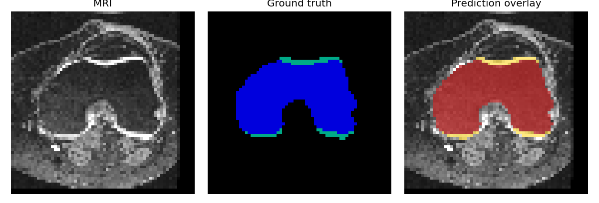

We already have a knee MRI segmentation model that works. The question is
not how to train it — the question is what we need before other people can
reliably use, reproduce, review, or build on it.

Cached tutorial example · multi-structure knee MRI segmentation · educational use only
This choice changes the recommendations at the end.
Testing checklist
Important: testing the AI model ≠ testing the AI software.
Model questions ask “is performance acceptable?” Software questions ask
“does the pipeline load, validate, save and stay stable?”
Reproducibility checklist
Clone → Install → Run one command → Reproduce the example result
Run the lab
Click to run the cached demo, smoke checks, or reproduction.
Live mode needs python scripts/tutorial_lab.py; otherwise you see a pre-recorded sample.
Ready. Choose an action above.
Score AI-generated tests
Same task, three prompts. Read the generated test, score it yourself (0–6),
then compare with the answer key.
Prompt
Generated test
Your score 0 / 6
Pack what you need
Drag items into the bag for this use case — or tap an item, then tap the bag.
Leave overkill items in the pool. Then check your packing.
Available evidence
Tap or drag items you would include.
Your bag
Drop essentials here
Final readiness summary
Educational indicator only — not a clinical certification.